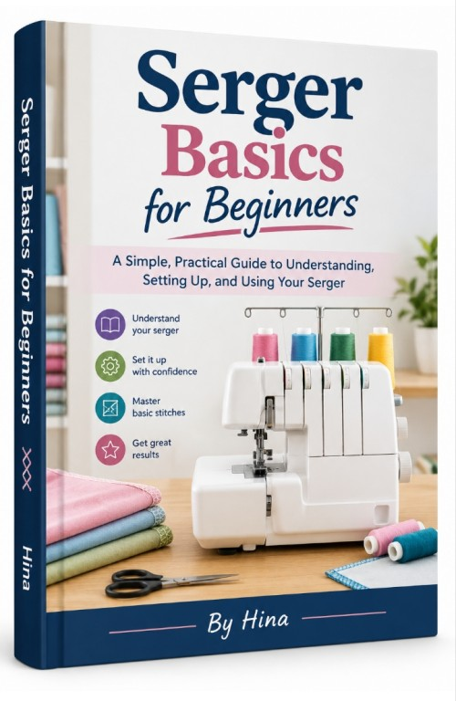

Serger Basics for Beginners
Product profile · Marketplace data 2026-10-09 · Sales-page research 2026-10-09 · Categories: Hobby & Craft

Marketplace record
| Product type | E-books |
|---|---|
| Price | $17.99 (Single payment) |
| Affiliate commission | 70% |
| Refund window | Per the vendor's sales page — check the official page before buying |
| Vendor | Book2Book (listed since 2026-09-04) |
| Marketplace stats* | Cart conversion — · cancel rate — · affiliate earnings/sale $12.59 |
* Vendor-side marketplace statistics reported by Digistore24; they depend on traffic quality and are not a forecast.
Vendor's marketplace description
Unlock high conversions with Serger Basics for Beginners, a comprehensive, step-by-step guide designed for sewing enthusiasts eager to master their overlocker machines. • Product Price: $17.99 (High impulse-buy price point ensuring strong conversion rates) • Affiliate Payout: 70% generous commission on every sale • Target Audience: Sewing hobbyists, DIY fashion makers, and crafters frustrated by t…
From the vendor's sales page
Page title: Serger Basics for Beginners - Digistore24
Section headlines
- Serger Basics for Beginners
- (Ebook)
- Your serger doesn't have to feel complicated.
- Inside, You'll Learn How To:
- No More Guessing. No More Frustration.
- $17.99
- Get Your Copy Today
- Get the Serger Basics for Beginners's Package Today
- Main Book: Serger Basics for Beginners
- #Bonus 1: 55 Common Serger Problems and Their Solutions
Opening copy
Instead of spending hours trying to figure out why your stitches look wrong, use a straightforward guide that helps you understand what's happening and what to check next.
Whether you've just bought your first serger or you've had one sitting unused, this guide can help you finally feel comfortable using it.
✅ Secure & Easy Download: After purchase, your English ebook will be safely delivered through the Digistore24 Download Vault. You’ll gain instant access to routines you can start practicing right away.
Prices mentioned on the page: $17.99 · $10
Guarantee language found: “60” — always confirm the current terms on the official page before relying on it.
Research method: raw HTML fetch · 997 words on page · quality: rich · researched 2026-10-09. Full research file (MD) ↗
Where to check it out
Read the vendor's full sales page (current price, guarantee terms and bonuses are listed there):
View official sales page
That link is an affiliate link — if you buy through it we earn a commission from the vendor at no extra cost to you.